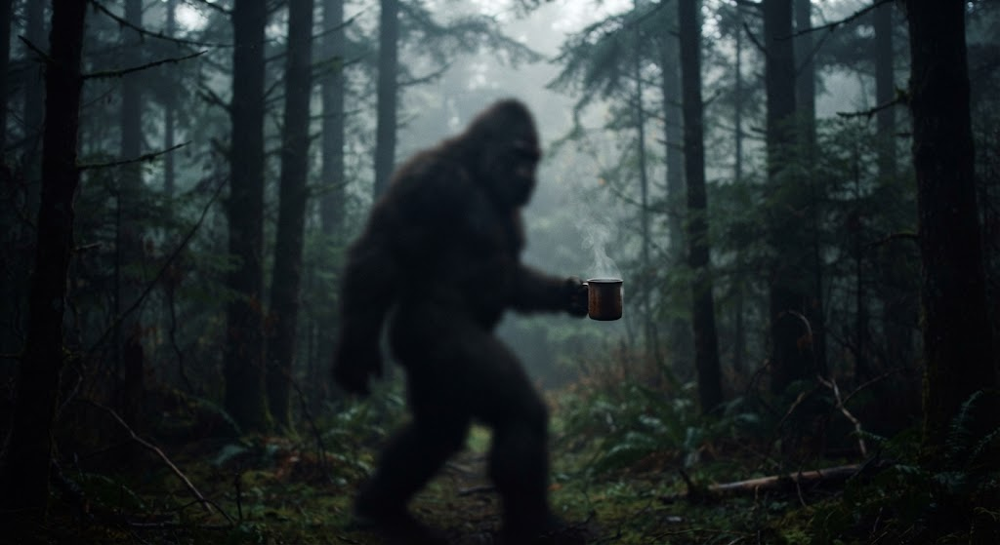

Welcome, Fellow Researchers!
Tired of searching the Pacific Northwest forests all day with nothing but blurry photographs to show for it? Hang up your night-vision goggles, put away your tracking equipment, and kick off your muddy boots. The Sleepy Sasquatch Outpost is a top-secret, heavily camouflaged getaway designed specifically for cryptid hunters and UFO enthusiasts.
Outpost Perks & Guidelines
- Night-Vision Rentals: Complimentary infrared goggles available at the front desk for midnight strolls through the woods.
- Squatch-Watch Deck: A high-altitude viewing platform equipped with binoculars for the perfect viewing point.
- Brenda the Chupacabra: Our resident emotional support cryptid. For safety reasons, do not feed her after midnight.
- The Decoy Garden: A field of plastic garden gnomes designed to distract local extraterrestrials and mischievous fairies from your parked vehicles.
Secure your research station before the next full moon. We are technically hidden from satellite maps to protect our guests, but you can find our front door if you believe hard enough.
